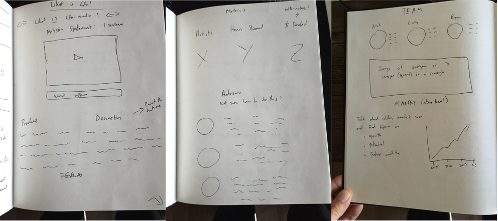
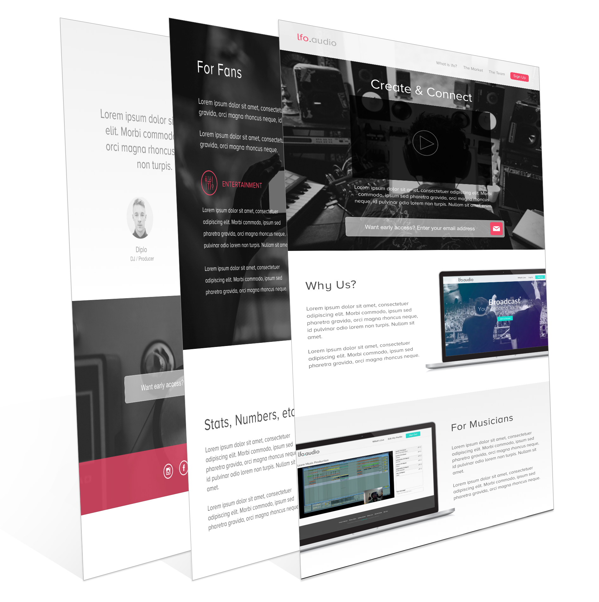
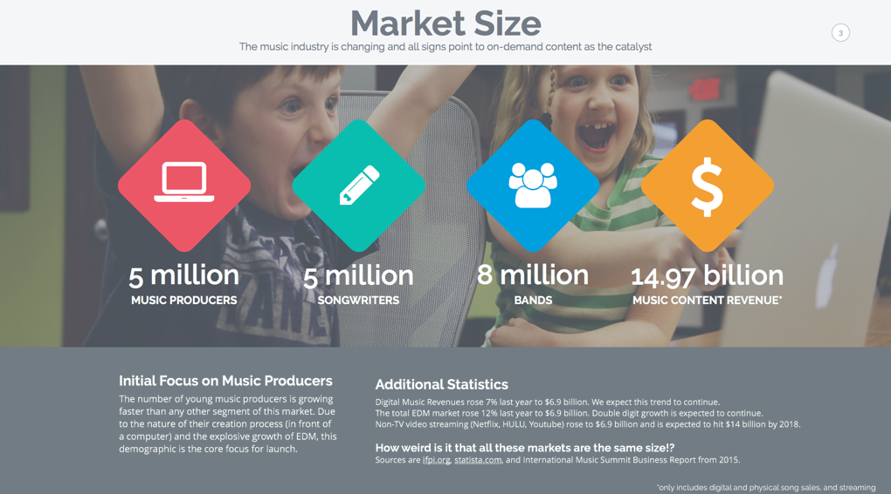
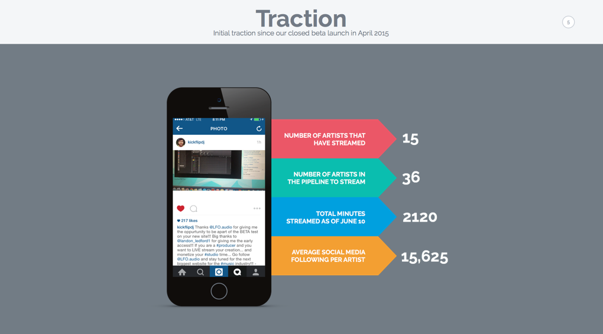
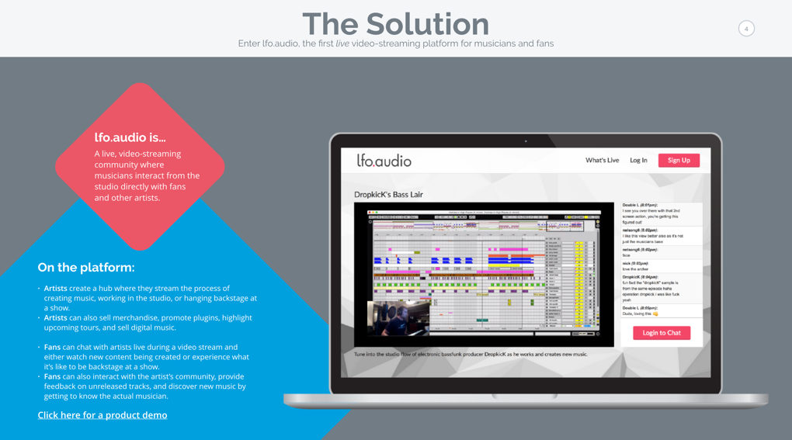
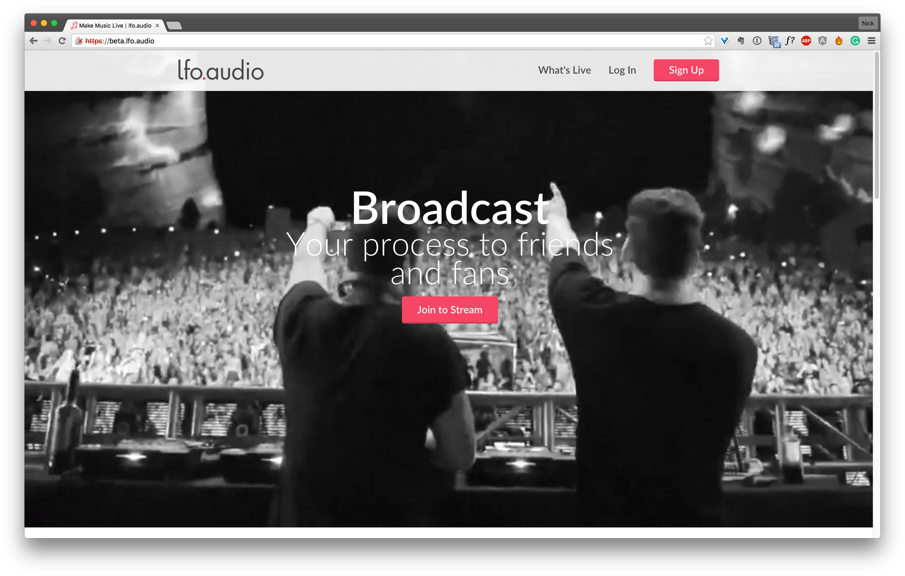

lfo.audio
A live, video-streaming application for musicians
This video is a product overview showing the beta platform.
About The Project
lfo.audio was a startup I ran that aimed to create a platform for musicians to share their studio time with fans in a live setting. I had the idea in 2012 and hired a team of 10 in 2014 and early 2015. After the creation of our MVP, we needed to create a pitch deck for fundraising and a landing page to provide information to prospective users. Creating and testing the deck and landing page lasted for about 2 months.
My Role & Overview
I was in charge of the fundraising process and creating the digital assets for our growth marketing. I worked with a visual artist on some of the assets for the landing page, and one of the engineering cofounders to put the finishing touches on responsive implementation.
During the project I spent several weeks researching other decks and landing pages, created wireframes and mockups of both, and went through several tested iterations. We ultimately raised $150k in seed funding.
Process
We began by sketching out the core functionality of the landing page. Then built out a wireframe with placeholder images.
Sketches of the landing page
Hi-res landing page mockup
Research and Goals
Through interviews with artists I learned what their needs were. I translated these into content for the landing page. Also, through comparative analysis I knew the main sections of content to include in a landing page.
Each section of the beta page was tested with artists and users in order to understand its effectiveness.
I shared the site with potential users and content creators which led to a few rounds of tweaking. After we were happy with the landing page the focus shifted back to the pitch deck.
Designing the Deck
I continued to evolve our content strategy based on talks with investors and the artists we wanted to use our site. We needed to show traction and growth to both parties, and also that we had influential partners in our advisors and early adopters. So these became slides. Additionally, we needed to prove to investors that live, video content was valuable through highlighting recent acquisitions and the potential target market size.
The deck went through about a dozen iterations based on feedback during live pitches and from dissemination to investors. Below are a few of the final slides.
A few of the slides I made for pitching
  Results
We faced several challenges during the landing page creation. It became clear that we were trying to please too many different parties. We ended up removing the sections for investors, and moved them into an executive summary.
We successfully closed a small seed funding round.
